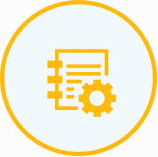

Strong Team
Led by Changpeng Zhao, our team have experience in both wall-street and crypto finance. Our team also have a track record of successful startups under our belt.
Proven Products
The underlying Binance platform has been deployed on 30+ exchanges already. It supports all devices and multiple languages, offering a seamless user experience.

Superior Technology
Our certified matching engine is capable of processing 1,400,000 orders per second, making Binance one of the fastest exchange in the market today.
Step 1: Go to Binance’s registration page
Enter the necessary information. It’s good to have a long and arbitrary password to better secure your account. Verify yourself and click on “Register” to proceed and you’ll receive a confirmation email.
Attention! Always use an email address which you know is secure and that you check regularly. When creating a password, use a mix of numbers, symbols, upper and lower-case letters.
Step 2: Secure your account
When your login for the first time, you’ll be asked if you want to set up 2FA. You DO want to set up 2FA, it’s very important! If you choose Skip for now you’ll regret it later!
2FA is two-factor authentication. It’s a security feature which gives users an extra form of password. When using 2FA, users enter their normal password and a second code which can be sent to a mobile device by SMS or created by the Google Authenticator app.
Step 3: Configure the miner with your settings
WALLET_ADDRESS - enter YOUR binereum wallet address (this is how Claymore Miner knows where to deposit your biner)
RIG_NAME – you can choose any name (like test), but don’t exaggerate: it should be 32 symbols max, contain only letters and numbers (no special characters like $%»*;@).
Step 4: Start mining
Double click your Bat file to start the miner. The miner will start, run the setx commands to set those environment variables, initialize each of your GPU’s, build the DAG file on each of your GPU’s and start hashing away. Let it run for about 20 seconds and then click “s” to display your Hashing speed.
If you’ve followed the steps above you should see this screen.
Every pool has a different interface but the principle stays the same. You’ll need to go to your pools website and type in your public wallet address. Let us use bineremine pool as an example.
You type your public wallet address in the search bar and you’ll be able to see all of the information about your binereum mining efforts.
In the case of bineremine pool once your balance reaches 0.01 bin it will get sent to your wallet address that you’ve typed into the start.bat file earlier.
Latest version is v12.0
MD5: 412d0b4de420d5efe33e16daded4f808 *Claymore's Dual binereum AMD+NVIDIA GPU Miner v12.0 - Windows.zip
(Download for Linux)
What do you need to mine binereum?
- An binereum wallet to hold all of your newly found currency;
- GPU drivers;
- A mining application (Claymore's Dual binereum AMD+NVIDIA GPU Miner);
- A mining pool address if you're going to mine within a mining pool;
- A graphics card (GPU) with at least 4gb of RAM.
What is Hash Rate?
The more efficient your hardware can convert electricity to biner, the higher your profit margins. An binereum mining profitability calculator can be used to determine a rough estimate of your earnings based on your hash rate, the network hash rate, block time, and the price of one bin.
What is binereum mining algorithm?
The specific proof-of-work algorithm that binereum uses is called 'binash', designed to require more memory to make it harder to mine using expensive ASICs.